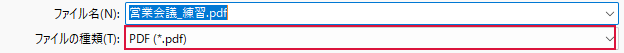

PDFに保存したい

編集用のExcelファイルから、配布用のPDFを作ります。
操作手順
- 編集用のExcelファイルを先に保存します。作業用ファイルなら Ctrl＋S、ひな形なら F12 で別の名前を付けます。
- Ctrl＋P で印刷プレビューを開き、配布する範囲とページ数を確認します。
- Esc で表に戻り、F12 を押します。［名前を付けて保存］が開きます。
- ［ファイルの種類］の一覧から［PDF］を選びます。ファイル名の末尾が .pdf になります。
- 保存先とファイル名を確認し、［保存］または［発行］をクリックします。
できたか確認
保存先のPDFを開き、ページ数、右端、最終行を確認します。
注意点
PDFにはExcelの数式や編集機能は残りません。編集内容は先にExcel形式で保存しておきます。